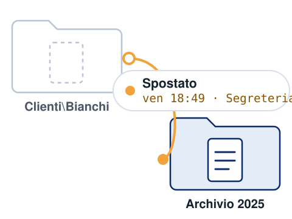
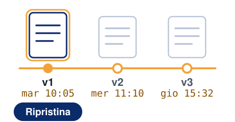
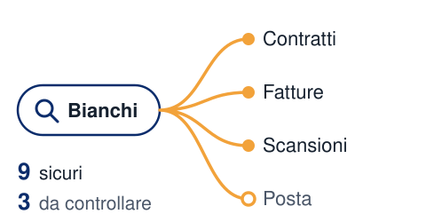
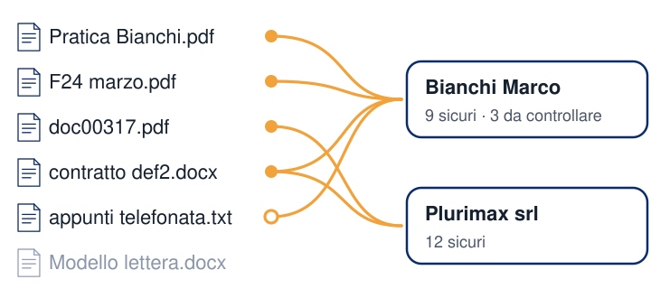
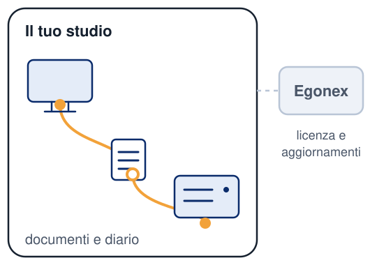

Qualcuno ha visto la pratica Bianchi?
Non serve chiederlo a tutto l'ufficio: vedi dove è finita e da quale computer.
Respira. FileGuard ti dice cosa gli è successo, quando e da quale computer. E se serve, torni alla versione giusta.
Per Windows 10 e 11 · Installazione guidata

Non serve chiederlo a tutto l'ufficio: vedi dove è finita e da quale computer.

Apri le versioni, le confronti e rimetti quella giusta.

Lo chiede un cliente: cerchi il suo nome o il codice fiscale e trovi i documenti che lo riguardano.

Nessuno. FileGuard riconosce da solo persone e ditte nei documenti dello studio che legge, e mette insieme i loro documenti.
Tu non carichi niente.
Nelle cartelle protette, se un documento viene modificato o sparisce, te lo dice: sul computer e, se vuoi, via email.

Le operazioni restano scritte: cosa è successo, quando, da quale computer.
Hai già il backup? Il backup salva una copia. FileGuard ricorda anche la storia. Vedi le funzioni
Documenti e diario stanno sui tuoi computer. Noi non entriamo, e il server per la licenza è in Europa.

Pratiche e atti degli assistiti.
Cartelle cliniche e referti.
Bilanci e dichiarazioni dei clienti.
Contratti, polizze e documenti dei clienti.
Anche per notai, consulenti del lavoro, CAF, consulenti finanziari e amministratori di condominio. Vedi tutti i settori
Quando qualcuno ti chiede cosa conservi su di lui, la risposta c'è. Ti aiuta con privacy e GDPR, senza sostituire il tuo consulente.
Il prezzo dipende dai computer che usi, e la licenza comprende tutte le funzioni. Guarda i piani, oppure scrivici: ti risponde una persona.